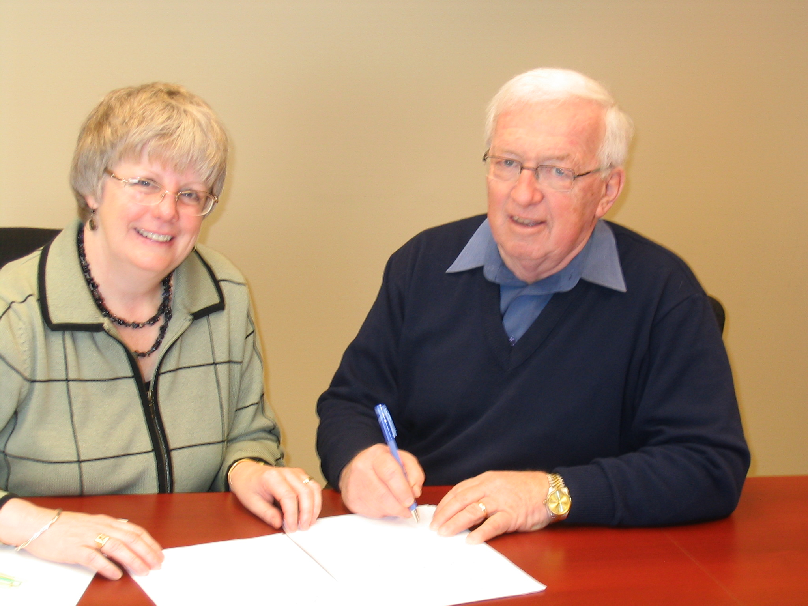

No. 66 April 27, 2007

Marie Salamoun-Dunne representing the PEI ALS Society and Norman Carruthers, President of CFPEI sign a partnership agreement for the management of funds set aside to meet future needs of ALS on PEI.
Foundation to Administer ALS Funds
The ALS Society of Prince Edward Island has concluded an agreement with The Community Foundation of Prince Edward Island covering the administration of funds to meet the society’s future needs. Under the agreement, ALS funds remain the property of the Society but are pooled with the Foundation’s portfolio for investment purposes. Funds transferred to CFPEI, $50,000, are a result of fundraising initiatives during the past couple of years.
Community foundations, and there are over 140 in Canada today, provide an inexpensive mechanism for people wishing to leave a legacy in support of their charitable interests. In addition, community
foundations assist other charitable organizations in the management of their funds. Currently, CFPEI administers over 30 funds including a number for Island charitable organizations.
Speaking on behalf of the Society, Marie Salamoun-Dunne commended the Foundation for making the service available to charitable organizations throughout the Province.
The ALS Society, which is volunteer driven in PEI, provides support for families, equipment for those living with the disease, advocacy on their behalf, education for healthcare professionals, volunteers, and the public, and contributes to research done nationally. Its sustaining fundraiser is the “Walk for ALS” which will be held June 16th, 2007 at Oyster Bed Bridge
The PEI ALS Society serves from 6-9 people annually through home visits. In 2006, for example, the Society provided home visits and services to nine individuals and families, and in the same period, they said a final- good to five of those treasured individuals.
_______________________________________
The Community Foundation News is an informal newsletter, in electronic form only, edited and published by, and at the whim of, Don Glendenning. Think of it as a letter from a friend. Forward this to others who may be interested. For further information, check our website, www.cfpei.ca or Email me at: don@glendenning.net